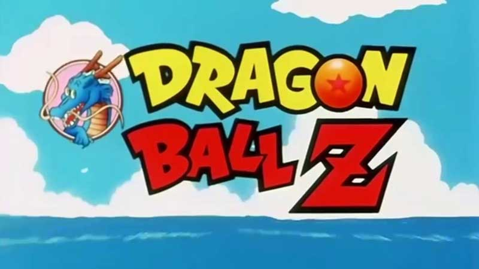
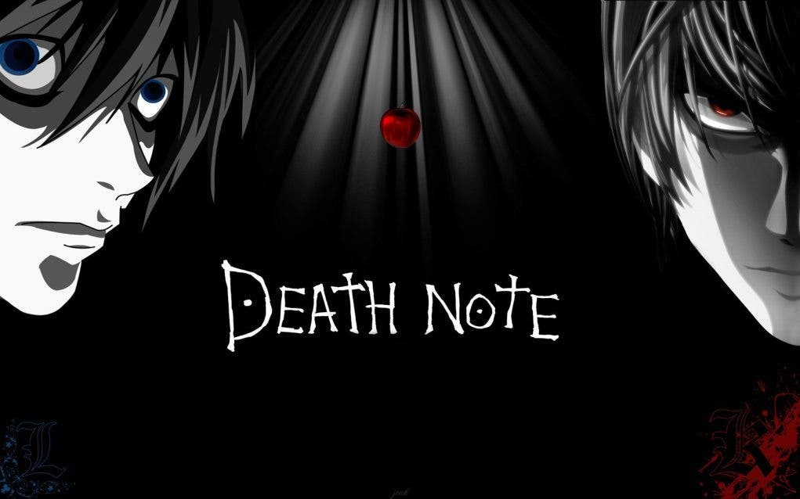

Avatar: La leyenda de Aang1 es una serie animada producida por la cadena televisiva Nickelodeon en sus estudios de animación en Burbank, California. La serie fue creada por Michael Dante DiMartino y Bryan Konietzko, los cuales también fueron productores ejecutivos, junto a Aaron Ehasz. Fue estrenada el 21 de febrero del 2005, y finalizó el 19 de julio de 2008 en Estados Unidos y el 24 y 26 de octubre de 2008 en el resto de América. Alcanzó popularidad y buenas críticas durante su emisión original.
La historia transcurre en un mundo de gente principalmente asiática (el estilo de vida en la serie se basa en la primera mitad del siglo XIX), donde predominan las artes marciales y la manipulación de los elementos en combinación con el misticismo oriental, dando seguimiento a las aventuras de Aang, el más reciente sucesor de una larga línea de Avatares, y sus amigos en un intento por salvar su místico mundo de la despiadada Nación del Fuego que busca conquistar a las demás naciones. Durante sus travesías son acechados insistentemente por el desterrado príncipe del Fuego Zuko, cuyo objetivo es capturar al Avatar para recuperar su honor. Esta serie es presentada como si se tratara de una serie de libros, en donde cada episodio actúa como un «capítulo», y cada temporada como un solo «libro», los cuales se titulan por el elemento temático de la temporada.
En América Latina, Italia, Nueva Zelanda, España, Reino Unido y los países cubiertos por Nickelodeon Asia, Avatar es subtitulado como La Leyenda de Aang traducido en sus respectivos idiomas. En los demás países, como Estados Unidos o Canadá, la serie se subtitula como The Last Airbender (El Último Maestro Aire) y si bien en Nickelodeon Asia y Nueva Zelanda, Avatar fue presentado originalmente como "The Last Airbender", más adelante fue cambiado a La Leyenda de Aang. Cabe destacar que en el doblaje latinoamericano se utiliza la secuencia estadounidense donde se puede apreciar el título The Last Airbender, aunque el narrador casi siempre lo nombra como La Leyenda de Aang. Ocurre lo contrario en países como Reino Unido donde se cambia claramente la secuencia del título a The Legend of Aang.
En 2012, se estrenó en Nickelodeon una serie derivada, titulada La leyenda de Korra, cuya historia tiene lugar 70 años después de los eventos de Avatar: la leyenda de Aang. Constó de cuatro temporadas y 51 episodios, finalizando en 2014.
Una serie de trilogías de novelas gráficas de Avatar: la leyenda de Aang continúa las aventuras de Aang, Katara, Sokka, Toph y Zuko después de los eventos ocurridos en el episodio final de la serie. Son publicadas por Dark Horse Comics.
En 2019, se publicó una novela que sirve como precuela de la serie, titulada Avatar, The Last Airbender: The Rise of Kyoshi, el primer libro de una duología que versa sobre el origen del Avatar Kyoshi, la más longeva de los Avatares y cuya era tiene lugar 412 años antes de la historia de Aang. Forma parte de una serie de libros basados en personajes de la serie, publicada por Abrams Books.
Asimismo, una serie de acción en vivo comenzará a ser producida por Netflix en el segundo semestre de 2019. Será un reinicio de la serie original y está prevista para estrenarse en 2020.
Dragon Ball (ドラゴンボール Doragon Bōru?, Bola de dragón) es un manga escrito e ilustrado por Akira Toriyama. Fue publicado originalmente en la revista Shōnen Jump, de la editorial japonesa Shūeisha, entre 1984 y 1995.
Su trama describe las aventuras de Gokū, un guerrero saiyajin, cuyo fin es proteger a la Tierra de otros seres que quieren conquistarla y exterminar a la humanidad. Conforme transcurre la trama, conoce a otros personajes que le ayudan en este propósito. El nombre de la serie proviene de unas esferas mágicas que al ser reunidas invocan a un dragón que concede deseos. En varias ocasiones resultan útiles tanto para Gokū y sus amigos como para la humanidad, aunque también son procuradas de forma constante por algunos seres malignos.
El manga tuvo 519 capítulos impresos recopilados en 42 volúmenes tankōbon. Dos años después de su lanzamiento, Toei Animation estrenó una adaptación anime que abarcó aproximadamente la primera mitad de la obra. Una vez concluida su transmisión en 1989 por el canal Fuji Television en Japón, Toei estrenó una continuación titulada Dragon Ball Z, la cual incorporó el contenido restante del manga. Un tercer anime producido por el mismo estudio se estrenó en 1996. Denominado Dragon Ball GT, posee un argumento inédito en cuya redacción no participó Toriyama. En 2015 comenzó a emitirse Dragon Ball Super en Fuji Television, anime que continúa los sucesos de Dragon Ball Z y que cuenta con una adaptación al manga, publicada a partir de junio del mismo año en Shōnen Jump. La violencia y desnudez presentes en algunos episodios tanto del anime como del manga provocaron la censura por parte de las distribuidoras en distintos países.
Las ventas del material impreso, cuantificadas en más de 156 millones de copias vendidas en Japón y en más de 230 millones a nivel mundial, llevaron a Dragon Ball a ser uno de los títulos más exitosos de Shūeisha. Las adaptaciones anime también consiguieron un éxito notable; en 1999, por ejemplo, uno de sus capítulos logró un récord de audiencia en EE.UU. en la cadena Cartoon Network, con 1,7 millones de televidentes. Dragon Ball es considerada como una de las obras más influyentes y populares de la época contemporánea, y ha servido de inspiración para otros mangakas como Eiichirō Oda, Masashi Kishimoto, Tite Kubo e Hiro Mashima, creadores de One Piece, Naruto, Bleach y Fairy Tail, respectivamente. Existe una franquicia de productos sobre el universo creado por Toriyama, que incluye películas animadas y de imágenes reales, animaciones originales, videojuegos, cartas coleccionables, figuras de acción y juguetes, entre otros.
Death Note (デスノート Desu Nōto?) es una serie de manga escrita por Tsugumi Ōba e ilustrada por Takeshi Obata, y cuya adaptación a serie de anime fue dirigida por Tetsurō Araki. Cuenta, además, con varias películas y videojuegos. La historia se centra en Light Yagami, un estudiante de secundaria. Un día, encuentra un cuaderno con poderes sobrenaturales llamado «Death Note», con el cual es capaz de matar personas si se escriben los nombres de estas en él, a la vez que si el portador visualiza mentalmente la cara de quien quiere asesinar. Light, percatándose del potencial del cuaderno, intenta eliminar a todos los criminales y crear un mundo donde no exista la maldad; sin embargo, un misterioso detective privado que se hace llamar L, famoso mundialmente por resolver grandes casos en el pasado, tratará de frustrar sus planes.
La serie está basada en una tirada que fue difundida por Shūeisha para la revista Shōnen Jump, y se generalizó nuevamente como una inclusión en el volumen trece, «How to Read», el cual es una guía que contiene datos relativos a la franquicia, incluyendo el perfil de todos los personajes principales. El manga comenzó a publicarse en diciembre de 2003 por la editorial Shūeisha, en la revista semanal japonesa Shōnen Jump, hasta su final en mayo de 2006 con el duodécimo volumen, llegando a recolectar ciento ocho capítulos. Más tarde, la historia del manga fue adaptada a un anime producido por Madhouse, hasta que llegó a su final con un total de treinta y siete episodios. El anime se emitió en Japón desde el 3 de octubre de 2006 hasta el 26 de junio de 2007 por la cadena televisiva Nippon Television. Asimismo, la obra ha sido adaptada a tres películas en imagen real, dos novelas ligeras y múltiples videojuegos creados por Konami para Nintendo DS. En el 2006, Tsugumi Ōba creó un artbook llamado «Blanc et Noir», el cual contiene ilustraciones sobre la serie, siendo publicado oficialmente por Shūeisha; asimismo, se han creado varios libros suplementarios sobre la franquicia. Más tarde, se creó un nuevo one-shot que narra los sucesos que ocurren dos años después del final del manga original, al igual que dos episodios especiales llamados «Death Note Rewrite: The Visualizing God» y «Death Note Rewrite 2: L's Successors», los cuales son unas especies de resúmenes de la primera parte narrada por Ryuk y la segunda parte narrada por L. Las versiones en español del manga fueron publicadas por la editorial Editores de Tebeos —antiguamente Ediciones Glénat— en España, por Grupo Editorial Vid y Panini Manga en México, por Larp Editores, por Ivrea en Argentina, y posteriormente por Panini Cómics en Colombia.
Varias publicaciones de manga, anime y otros medios han elogiado y, a su vez, criticado la serie. Aun cuando se ha señalado que su argumento resulta entretenido para las audiencias, Death Note fue prohibido en China debido a que los niños modificaban sus cuadernos en semejanza al Death Note.25
